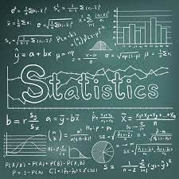

Hi Everyone,
Welcome to the world of Statistics
Statistics is the discipline that concerns the collection, organization, analysis, interpretation, and presentation of data.
In applying statistics to a scientific, industrial, or social problem, it is conventional to begin with a statistical population or a statistical model to be studied.
Statistics, the science of collecting, analyzing, presenting, and interpreting data. Governmental needs for census data as well as information about a variety of economic activities provided much of the early impetus for the field of statistics. Currently the need to turn the large amounts of data available in many applied fields into useful information has stimulated both theoretical and practical developments in statistics.
|

|
|